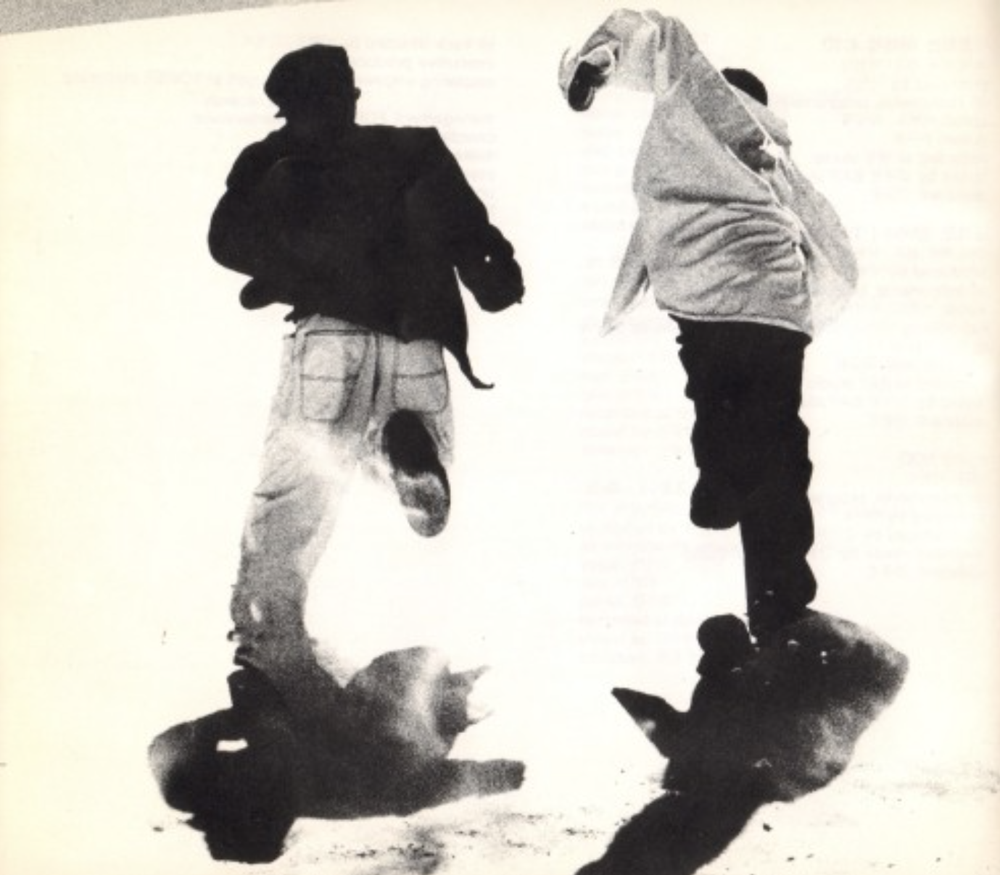
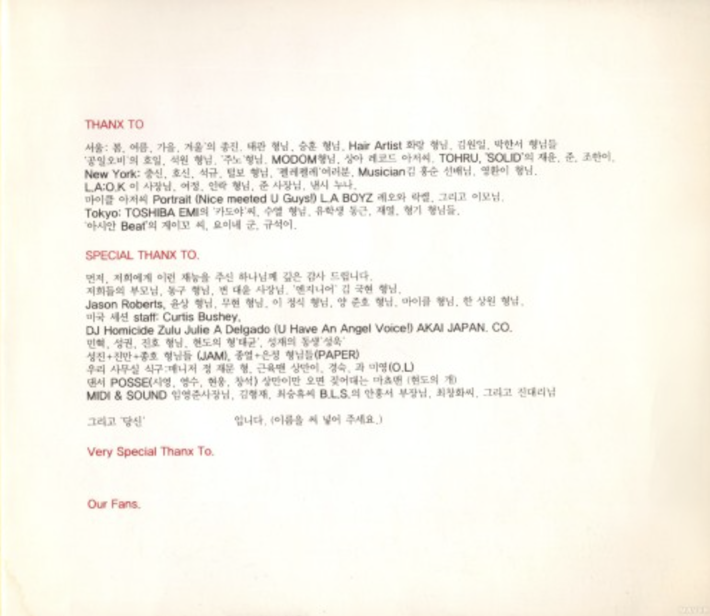
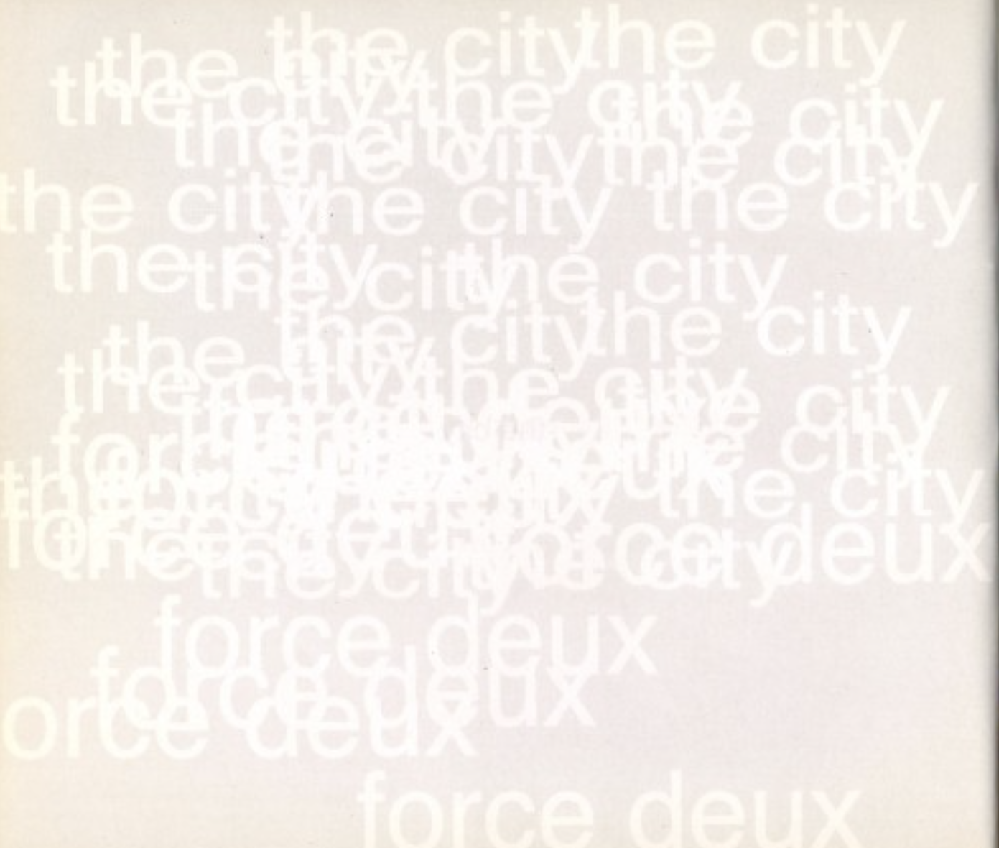
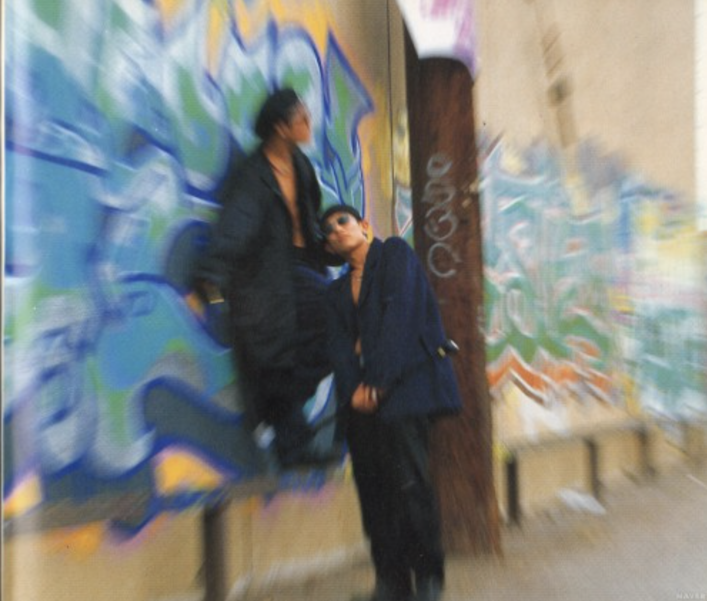
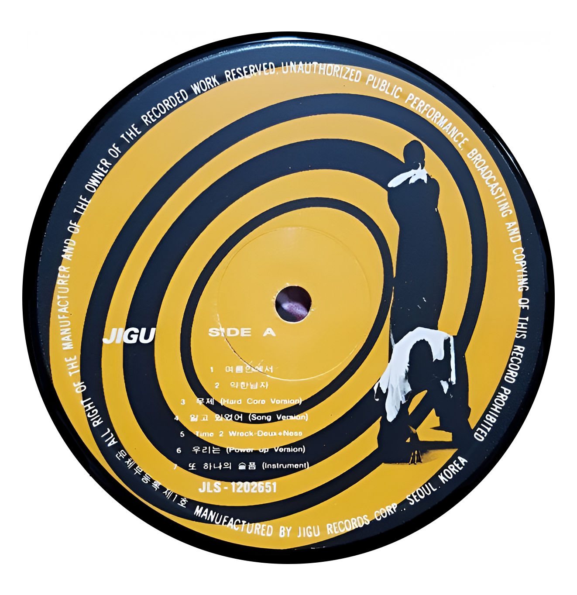

FORCE DEUX
<1995>
가수 소개
듀스는 김성재와 이현도로 이루어진 90년대 대표 힙합 듀오로, 현진영과 와와 출신 멤버들이 결성한 그룹이다. 프랑스어로 ‘둘’을 뜻하는 ‘DEUX’에서 이름을 따왔으며, 흰색 의상과 선글라스를 활용한 강렬한 무대 스타일과 세련된 흑인음악 기반의 퍼포먼스로 큰 인기를 얻었다.
앨범소개
1995년에 발매한 듀스의 마지막 정규 앨범인 3집이다. 리더 이현도가 스스로 최고작으로 꼽았던 <굴레를 벗어나>는 앨범의 가장 세련된 명곡이다. 이 앨범은 뮤지션의 영원한 숙제인 음악성과 대중성이라는 두 마리 토끼를 잡은 흔치 않은 역작으로 평가받고 있다.
🎵




